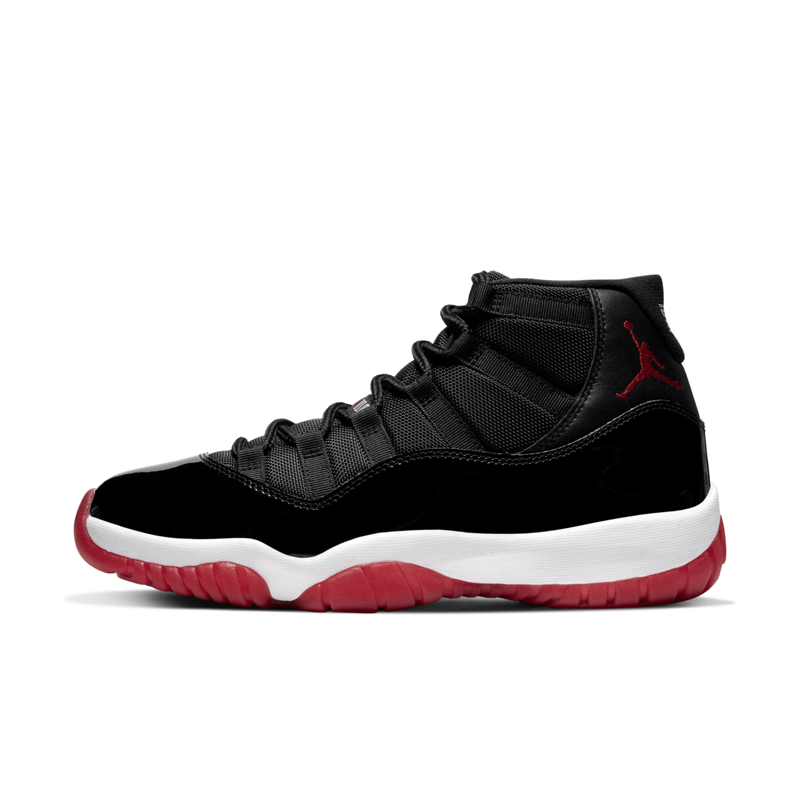
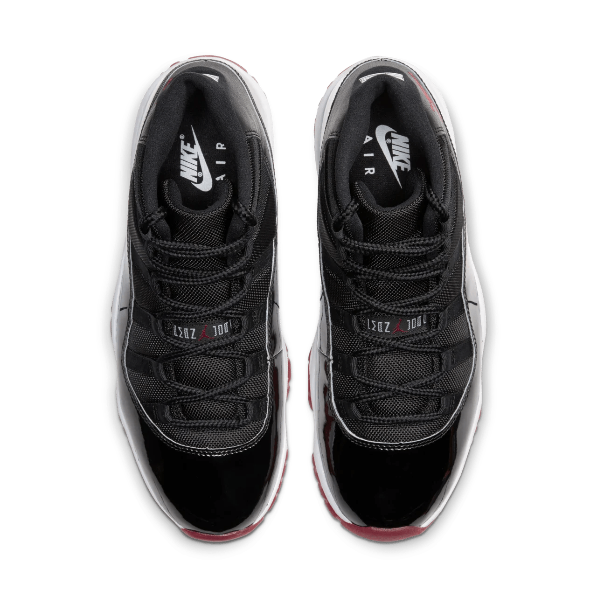
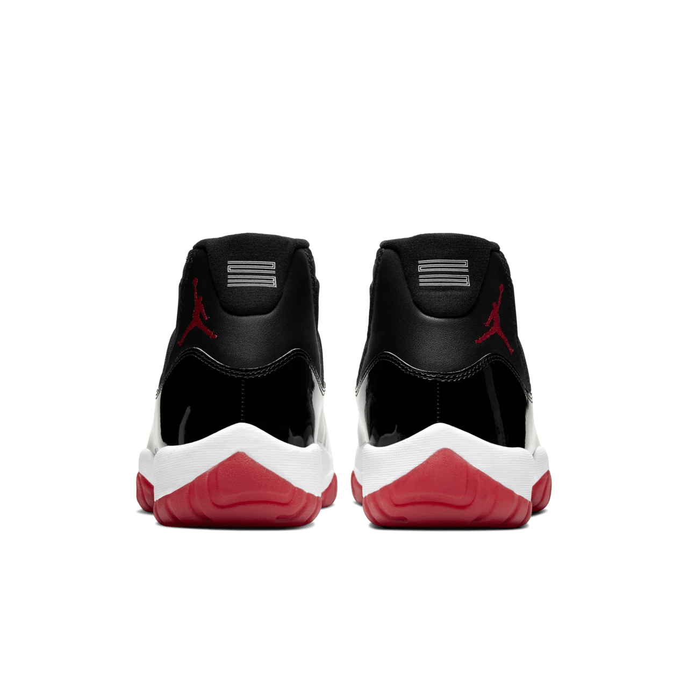
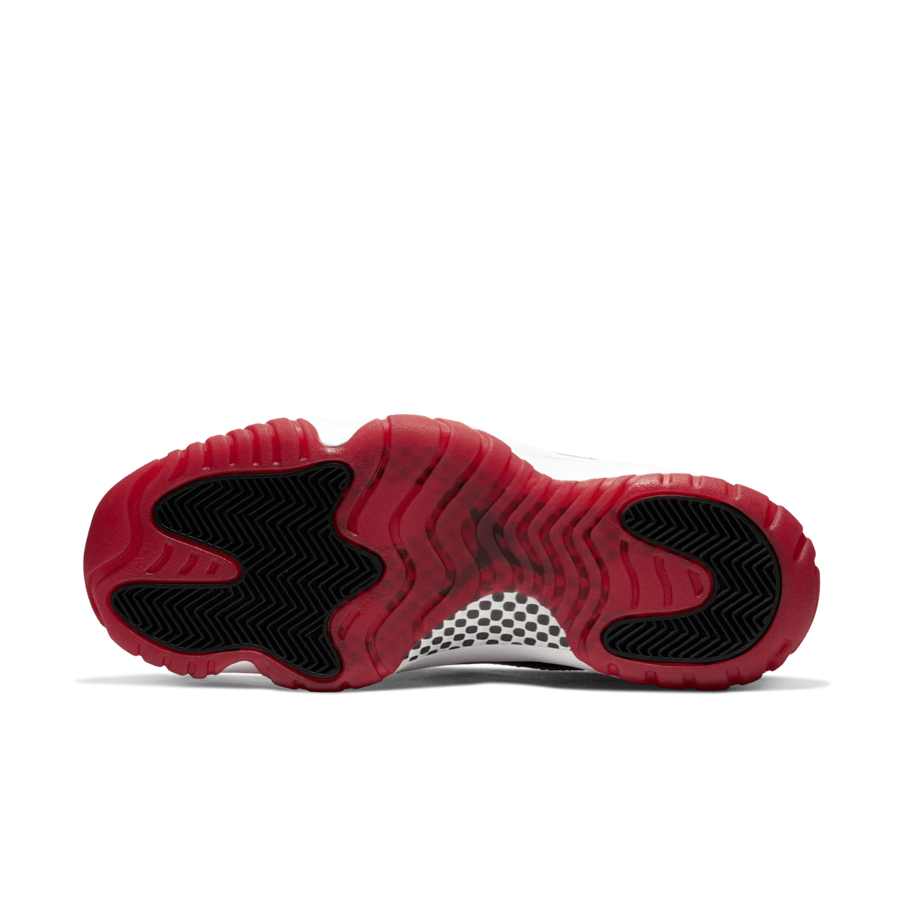

The Air Jordan 11 "Bred" is one of the most iconic sneakers in the history of basketball and sneaker culture. First released in 1996, the "Bred" (short for black and red) colorway of the Jordan 11 was famously worn by Michael Jordan during his playoff run with the Chicago Bulls, eventually leading them to their fourth NBA championship. The design, created by legendary Nike designer Tinker Hatfield, combines style and performance, featuring a sleek patent leather overlay, mesh upper, and a translucent outsole.
The "Bred" Jordan 11 stands out not only for its bold aesthetic but also for its technological advancements. The patent leather gave it a formal, high-fashion appeal, while the carbon fiber shank provided unmatched support and stability on the court. This blend of elegance and performance solidified its place in sneaker history.
In popular culture, the Jordan 11 "Bred" has transcended basketball. It became a must-have for sneaker enthusiasts and streetwear aficionados alike. Even with multiple re-releases, the sneaker's appeal remains timeless, symbolizing both the peak of Jordan's career and the intersection of sport and style.
   